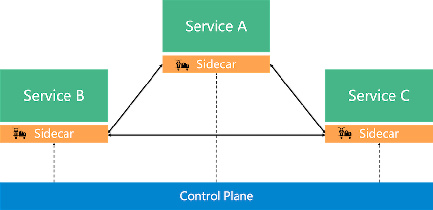
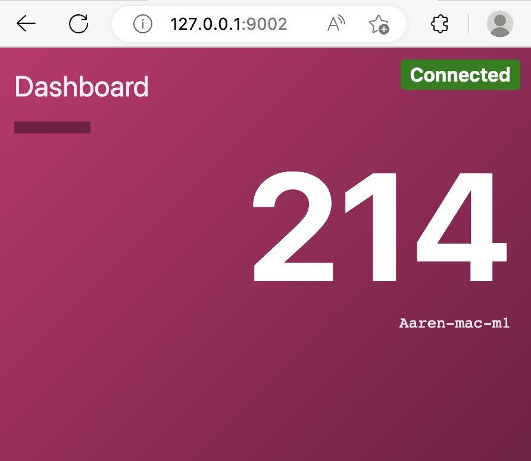

consul实战系列-之四 基于Consul和Envoy搭建服务网格
consul实战系列-之四 基于Consul和Envoy搭建服务网格
Servuce Mesh介绍
在应用从单体架构向微服务架构演进的过程中，微服务之间的服务发现、负载均衡、熔断、限流等服务治理需求是无法回避的问题。 在 Service Mesh 出现之前，通常的做法是将这些基础功能以 SDK 的形式嵌入业务代码中，但是这种强耦合的方案会增加开发的难度，增加维护成本，增加质量风险。
比如 SDK 需要新增新特性，业务侧也很难配合 SDK 开发人员进行升级，所以很容易造成 SDK 的版本碎片化问题。
如果再存在跨语言应用间的交互，对于多语言 SDK 的支持也非常的低效。 一方面是相当于相同的代码以不同语言重复实现，实现这类代码既很难给开发人员带来成就感，团队稳定性难以保障；
另一方面是如果实现这类基础框架时涉及到了语言特性，其他语言的开发者也很难直接翻译。 而 Service Mesh 的本质则是将此类通用的功能沉淀至 sidecar 中，由 sidecar 接管服务的流量并对其进行治理。
在这个思路下，可以通过流量劫持的手段，做到代码零侵入性。这样可以让业务开发人员更关心业务功能。 而底层功能由于对业务零侵入，也使得基础功能的升级和快速的更新迭代成为可能。
Service A，B，C之间的通过sidecar来通信 
本文，我们以consul官方一篇教程文档 为例，讲述如何基于consul和envoy建立Service Mesh微服务调用
部署ServiceMesh例子
准备
- dev模式运行的consul agent
- 安装envoy。去Envoy项目的Github Relsease下载， 或操作系统包管理工具安装
- 准备两个Demo应用程序，通过Service Mesh加密通信，一个计数器服务Counting Service，一个大盘服务 Dashboard Service 查看计数值,例子github仓库
Dashboard和Counting网络架构

Service Mesh注册
Couning应用注册配置 counting.hcl
service {
name = "counting"
id = "counting-1"
port = 9003
connect {
sidecar_service {}
}
check {
id = "counting-check"
http = "http://localhost:9003/health"
method = "GET"
interval = "5s"
timeout = "1s"
}
}
Dashboard应用注册配置 dashboard.hcl
service {
name = "dashboard"
id = "dashboard-1"
port = 9002
connect {
sidecar_service {
proxy {
upstreams = [
{
destination_name = "counting"
local_bind_port = 5000
}
]
}
}
}
check {
id = "dashboard-check"
http = "http://localhost:9002/health"
method = "GET"
interval = "5s"
timeout = "1s"
}
}
根据服务定义文件，将服务注册到consul
consul services register counting.hcl
consul services register dashboard.hcl
校验已注册的服务consul catalog services
consul
counting
counting-sidecar-proxy
dashboard
dashboard-sidecar-proxy
可以看到额外注册了 -sidecar-proxy 结尾的sidecar代理服务
通过consul的intention 配置，设置服务访问权限,counting服务允许来自dashboard服务访问 intention-allow-config.hcl
Kind = "service-intentions"
Name = "counting"
Sources = [
{
Name = "dashboard"
Action = "allow"
}
]
更新服务访问规则
consul config write intention-allow-config.hcl
启动dashboard-service 和counting-service (demo-consul-101从开头准备的github仓库拉取)
# 将**PORT**和**COUNTING_SERVICE_URL**作为环境变量传递给dashboard-service
cd demo-consul-101/dashboard-service
PORT=9002 COUNTING_SERVICE_URL="http://127.0.0.1:5000" go run ./main.go &
cd demo-consul-101/counting-service
# 将**PORT** 作为环境变量传递给counting-service
PORT=9003 go run ./main.go
启动envoy代理转发
# 启动窗口1
consul connect envoy -sidecar-for counting-1 -admin-bind localhost:19001
# 启动窗口2
consul connect envoy -sidecar-for dashboard-1
浏览应用
访问 http://127.0.0.1:9002，验证每次刷新页面计数器递加
